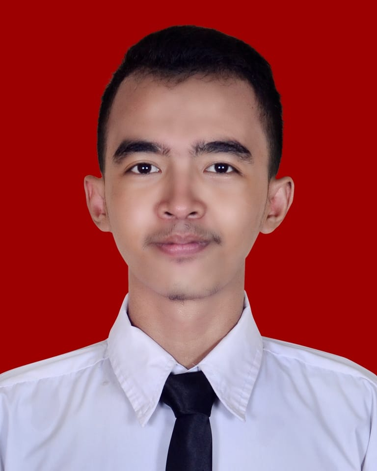

Profile
Nama : Ahmad Noval Fahmi Tanggal Lahir : 1 Maret 2000 Alamat : Jl.Tegal Parang Utara 1 Jenis Kelamin : Laki-Laki Agama : Islam No.telp : 0851-5653-4857 Umur : 20 tahun Email : @novalahmad846@gmail.com
Pendidikan
| Sekolah | Tempat | Tahun |
|---|---|---|
| SD | Mi Alkhairiyah pagi | 2006 - 2012 |
| MTS | MTS Alkhairiyah | 2012 - 2015 |
| MA | Saadatuddarain | 2015 - 2018 |
| Petik | Pesantren Teknologi Informasi dan Komunikasi | 2018 - 2019 |
Working Experience
Kasir
Skill Lain
Komputer : Microsoft Office (MS. word, MS . Power Point) Mobile Programming (Android Studio) Web Programming (HTML, PHP, JavaScript)